정보보안기사 (2018-09-08 기출문제)
1과목: 시스템 보안
1. 어떤 공격을 방지하기 위한 것인가?
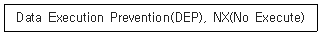
- XSS 공격
- 힙 스프레이 공격
- CSRF 공격
- SQL 인젝션 공격
(정답률: 45%)

2. 다음 중 옳지 않은 것은?
- 리눅스 시스템에서는 계정 목록을 /etc/passwd 파일에 저장하고 있다.
- 일반 사용자의 사용자 번호(UID, User ID)는0번으로 부여받게 된다.
- 디렉토리의 권한은 특수권한, 파일 소유자 권한, 그룹 권한, 일반(Others) 권한으로 구분된다.
- 접근 권한이 rwxr-xr-x인 경우 고유한 숫자로 표기하면 755가 된다.
(정답률: 71%)
3. 적절하게 고른 것은?
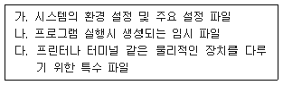
- 가 /usr 나/temp 다/dev
- 가 /usr 나/tmp 다/var
- 가 /etc 나/temp 다/var
- 가 /etc 나/tmp 다/dev
(정답률: 73%)
4. 인적자원 관리자가 특정 부서 사용자들에게 같은 직무를 수행할 수 있는 접근 권한을 할당하고 있다. 이것은 다음 중 어느 것의 예인가?
- 역할기반 접근 통제
- 규칙기반 접근 통제
- 중앙집중식 접근 통제
- 강제적 접근 통제
(정답률: 68%)
5. 윈도우 레지스트리 하이브 파일이 아닌 것은?
- HKEY-CLASSES-ROOT
- HKEY LOCAL-MACHINE
- HKEY-CURRENT-SAM
- HKEY-CURRENT-USER
(정답률: 62%)
6. 윈도우 NTFS에서 모든 파일들과 디렉터리에 대한 정보를 포함하고 있는 것은?
- MFT(Master File Table)
- FAT(File Allocation Table)
- $Attr Def
- $LogFile
(정답률: 67%)
7. 리눅스/유닉스 시스템에서 로그를 확인하는 명령어나 로그파일과 가장 거리가 먼 것은?
- wtmp
- history
- pacct
- find
(정답률: 56%)
8. 다음 지문이 설명하는 데이터베이스 보안 유형은 무엇인가?
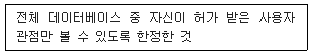
- Access Control
- Encryption
- Views
- Authorization Rules
(정답률: 54%)
9. 패스워드와 함께 일방향 해시함수에 입력되는 12비트 난수값은?
- 세션키
- 메시지
- 솔트(salt)
- 멜로리
(정답률: 66%)
10. 아이노드(i-node)가 가지고 있지 않은 정보는?
- 파일의 이름
- 파일의 링크 수
- 파일 수정시각
- 파일 유형
(정답률: 52%)
11. 다음 악성코드에 대한 설명 중 옳지 않은 것은?
- 루트킷(Rootkit)은 단일 컴퓨터 또는 일련의 컴퓨터 네트워크에 대해 관리자 레벨의 접근을 가능하도록 하는 도구의 집합이다.
- 웜(Worm)은 네트워크 등의 연결을 통하여 자신의 복제품을 전파한다.
- 트로이목마(Trojan Horse)는 정상적인 프로그램으로 가장한 악성 프로그램으로 보통 복제 과정을 통해 스스로 전파된다.
- 트랩도어(Trapdoor)는 정상적인 인증 과정을 거치지 않고 프로그램에 접근하는 일종의 통로이다.
(정답률: 63%)
12. 디스크 공간 할당의 논리적 단위는?
- Volume
- Page
- Cluster
- Stream
(정답률: 42%)
13. 다음 중 파일 시스템의 무결성 보장을 위해 점검해야 할 사항으로 옳지 않은 것은?
- 파일의 소유자, 소유그룹 등의 변경 여부 점검
- 파일의 크기 변경 점검
- 최근에 파일에 접근한 시간 점검
- 파일의 symbolic link의 수 점검
(정답률: 35%)
14. 다음 파일시스템(FAT, NTFS)에 대한 설명 중 옳지 않은 것은?
- FAT 뒤의 숫자는 표현 가능한 최대 클러스터 개수와 관련되어 있다.
- NTFS 파일시스템은 대용량 볼륨, 보안 및 암호화를 지원한다.
- NTFS 파일시스템은 타 운영체제 호환이 용이하다.
- 저용량 볼륨에서는 FAT가 NTFS보다 속도가 빠르다.
(정답률: 53%)
15. 다음 중 SECaaS에 대한 설명으로 적합하지 않은 것은?
- 클라우드 컴퓨팅 환경 하에서 인터넷을 통하여 보안서비스를 제공하는 것을 두고 SECaaS(Security as a Service)라고 한다.
- SECaaS는 Standalone으로 클라우드 기반 보안서비스를 제공하는 형태와 클라우드 서비스 제공업체가 자사의 고객에게 보안기능을 제공하는 형태로 나뉠 수 있다
- SECaaS는 보안서비스를 ASP 형태로 공급한다는 측면에서 넓은 의미의 PaaS(Platform as a Service) 로 볼 수 있다.
- SECaaS는 인증, 안티바이러스, 침입탐지, 모의침투, 보안이벤트 관리 등의 다양한 보안 기능을 제공할 수 있다.
(정답률: 53%)
16. SAM에 대한 설명으로 옳지 않은 것은?
- 사용자 패스워드는 해시된 상태로 저장된다.
- SID를 사용하여 각 자원에 대한 접근권한을 명시한다.
- SAM 파일은 사용자, 그룹 계정 및 암호화된 패스워드 정보를 저장하고 있는 데이터베이스이다.
- 사용자 로그인 정보와 SAM 파일에 저장된 사용자 패스워드 정보를 비교해 인증 여부가 결정된다.
(정답률: 45%)
17. 로그분석에 사용되며 문자열을 처리하는 Unix 명령어와 가장 거리가 먼 것은?
- awk
- wc
- grep
- nohup
(정답률: 53%)
18. 다음 지문에서 설명하고 있는 침입탐지 기술이 무엇인지 고르시오.
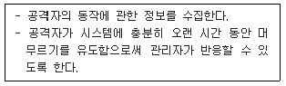
- IDS(Instrusion Detection System)
- IPS(Instrusion Prevention System)
- UTM(Unified Threat Management)
- Honeypot
(정답률: 66%)
19. 다음 중 Unix 시스템에서 secure.txt 파일의 소유자에게는 읽기와 실행권한을 부여하고 다른 사용자에게는 읽기 권한을 제거하라는 권한 변경 명령으로 알맞은 것은?
- #chmod306 secure.txt
- #chmod504 secure.txt
- #chmodotrx, a-r secure.txt
- #chmodu=rx, o-r secure.txt
(정답률: 70%)
20. 리눅스에서 관리하는 주요 로그파일에 대한 설명으로 옳지 않은 것은?
- /var/log/cron : 시스템의 정기적인 작업에 대한 로그
- /var/log/messages : 커널에서 보내주는 실시간 메시지
- /var/log/secure : 시스템의 접속에 관한 로그로 언제/누가/어디의 정보를 포함
- /var/log/xferlog : 메일 송수신에 관한 로그
(정답률: 55%)
2과목: 네트워크 보안
21. 다음은 PORT 스캔 공격에 관한 설명이다. 설명 중 맞는 것을 모두 고른 것은?
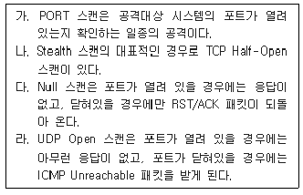
- 가, 나
- 가, 나, 다.
- 가, 나, 라
- 가, 나, 다, 라
(정답률: 26%)
22. 다음의 포트 스캔 중 플래그 (SYN, RST, ACK, AN, PS URG)을 모두 off하여 스캔하는 것은?
- TCP SYN 스캔
- Fin 스캔
- Null 스캔
- Xmas 스캔
(정답률: 52%)
23. 오용탐지 방법으로 적당하지 않은 것은?
- 시그니처 분석
- 페트리넷(Petri-net)
- 상태전이 분석
- 데이터마이닝
(정답률: 46%)
24. 공격 대상이 방문할 가능성이 있는 합법적인 웹 사이트를 미리 감염시킨 뒤, 잠복하고 있다가 공격 대상이 방문하면 대상의 컴퓨터에 악성코드를 설치하는 공격 방법은?
- 악성 봇(Malicious Bot) 공격
- 워터링 홀(Watering Hole) 공격
- 스피어 피싱(Spear Phishing) 공격
- 피싱(Phishing) 공격
(정답률: 51%)
25. 다음 중 패킷의 출발지와 목적지 모두를 반영하여 주소 변환을 수행하는 NAT(Network Address Translation)는?
- 동적 NAT
- 정적 NAT
- 바이패스 NAT
- 폴리시 NAT
(정답률: 24%)
26. 도메인을 탈취하거나 도메인 네임 시스템 또는 프록시 서버의 주소를 변조함으로써 사용자들로 하여금 진짜 사이트로 오인해 접속하도록 유도한 뒤, 개인 정보를 탈취하는 해킹 기법은?
- 피싱
- 파밍
- 스미싱
- 봇넷
(정답률: 47%)
27. 다음 용어 중 개념상 나머지와 가장 거리가 먼 것은?
- sniffing
- eavesdropping
- tapping
- spoofing
(정답률: 31%)
28. 다음 중 end point에 설치되어 다양한 보안 기능을 통합적으로 수행하는 보안 시스템을 지칭하는 것은?
- IPS
- NAC
- Firewall
- UTM
(정답률: 29%)
29. 다음 중 전문가 시스템(Expert System)을 이용한 IDS에서 사용되는 침입 탐지기법은?
- Behavior Detection
- State Transition Detection
- Knowledge Based Detection
- Statistical Detection
(정답률: 52%)
30. Snort의 각 규칙은 고정된 헤더와 옵션을 가지고 있다. 패킷의 payload 데이터를 검사할 때 사용되는 옵션에 포함되지 않는 필드는?
- ttl
- content
- depth
- offset
(정답률: 45%)
31. 이래 지문 빈칸에 들어갈 용어를 바르게 짝지은 것은?
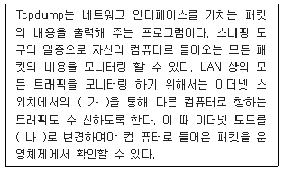
- 가 : 포트 미러링(Port Mirroring) 나: 수집 모드(Acquisition Mode)
- 가 : 포트 미러링(Port Mirroring) 나 : 무차별 모드(Promiscuous Mode)
- 가 : 패킷 포워딩(Packet Forwarding) 나 : 수집 모드(Acquisition Mode)
- 가 : 패킷 포워딩(Packet Forwarding) 나 : 무차별 모드(Promiscuous Mode)
(정답률: 41%)
32. 다음 중 VoIP 서비스에 대한 공격과 가장 거리가 먼 것은?
- Register 플러딩 공격
- GET 플러딩 공격
- INVITE 플러딩 공격
- RTP 플러딩 공격
(정답률: 35%)
33. 3개의 IP 패킷으로 fragmentation 되는 과정을 설명한 것이다. 세 번째 패킷의 필드에 들어갈 값으로 적절한 것은?
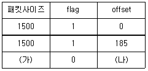
- 가: 1040 , 나: 130
- 가: 1000 , 나: 370
- 가: 1040 , 나: 370
- 가: 1000 , 나: 125
(정답률: 45%)
34. 스위치 장비가 동작하는 방식 중 전체 프레임을 모두 받고 오류 검출 후 전달하는 방식은?
- Cut-through 방식
- Fragment-Free 방식
- Direct Switching 방식
- Store and Forward 방식
(정답률: 56%)
35. VPN의 기능과 가장 거리가 먼 것은?
- 데이터 기밀성
- 데이터 무결성
- 접근통제
- 시스템 무결성
(정답률: 49%)
36. 스위칭 환경에서의 스니핑 공격 유형 중, 공격자가 “나의 MAC 주소가 라우터의 MAC 주소이다."라는 위조된 ARP Reply를 브로드캐스트로 네트워크에 주기적으로 보내어 스위칭 네트워크상의 다른 모든 호스트들이 공격자 호스트를 라우터로 믿게 하는 공격은?
- Switching Jamming
- ICMP Redirect
- ARP Redirect
- DNS Spoofing
(정답률: 47%)
37. 보안 위협과 공격에 대한 설명 중 옳지 않은 것은?
- 분산 반사 서비스 거부 공격(DRDoS : Distributed Reflection DoS)은 DDoS의 발전된 공격 기술로서 공격자의 주소를 위장하는 IP Spoofing 기법과 실제 공격을 수행하는좀비와 같은 감염된 반사체 시스템을 통한 트래픽 증폭 기법을 이용한다.
- 봇넷을 이용한 공격은 봇에 의해 감염된 다수의 컴퓨터가 좀비와 같이 C&C 서버를 통해 전송되는 못 마스터의 명령에 의해 공격이 이루어지므로 공격자 즉 공격의 진원지를 추적하는데 어려움이 있다.
- Smurf 공격은 ICMP Flooding 기법을 이용한 DoS 공격으로 Broadcast address 주소의 동작특성과 IP Spoofing 기법을 악용하고 있다.
- XSS(Cross-Site Scripting) 공격은 공격 대상 사용자가 이용하는 컴퓨터 시스템의 브라우저 등에서 악성코드가 수행되도록 조작하여 사용자의 쿠키 정보를 탈취, 세션 하이재킹과 같은 후속 공격을 가능하게 한다.
(정답률: 28%)
38. 다음 지문의 방법들이 탐지하려는 공격은?
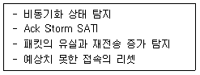
- MITM 공격
- TCP 세션 하이재킹
- 스푸핑 공격
- 스머프 공격
(정답률: 51%)
39. L2 스위치로 구성된 네트워크 환경에서 스니핑 공격에 대한 설명으로 옳지 않은 것은?
- L2 스위치로 구성된 네트워크 환경에서 스니핑 공격을 시도하기 위해 사용되는 주요 방법들로는 ARP Spoofing ICMP Redirect, MAC Address Flooding 등이 있다.
- ARP Spoofing 공격은 공격자가 대상 시스템에 조작된ARP Request를 지속적으로 전송함으로써 이루어지며, 대상시스템의 ARP cache table을 변조한다.
- ICMP Redirect 공격은 공격자가 ICMP Redirect 메시지를 생성하여 공격 대상 시스템에게 전송함으로써 공격대상 시스템이 전송하는 패킷이 공격자에게 먼저 전송되도록 한다.
- MAC Address Flooding 공격은 공격자가 조작된 MAC 주소를 프레임의 출발지 MAC 주소에 설정하여 보내는 과정을 반복함으로써 스위치가 더미허브처럼 동작하도록 한다.
(정답률: 16%)
40. IDS의 동작 순서를 바르게 나열한 것은?
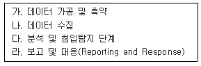
- 가 - 나 - 다 - 라
- 나 - 가 - 다 - 라
- 나 - 다 - 가 - 라
- 나 - 다 - 라 - 가
(정답률: 49%)
3과목: 어플리케이션 보안
41. 다음 중 XML 기반 Web 기술과 관련성이 가장 적은 것은?
- OCSP
- UDDI
- WSDL
- SOAP
(정답률: 40%)
42. 전자입찰시스템 및 프로토콜의 특징에 대한 설명 중 틀린 것은?
- 전자 입찰 도구로는 자바, 디지털서명, XML 등이 이용될 수 있다.
- 입찰 기간 마감은 여러 개의 입찰 서버가 있을 경우 단계적으로 마감된다.
- 전자 입찰은 입찰자, 입찰 공고자, 전자입찰시스템으로 구성된다.
- 전자 입찰 시 독립성, 비밀성, 무결성 등이 요구된다.
(정답률: 52%)
43. 아래 그림은 공격자가 웹 해킹을 시도하는 화면이다. 이래 화면의 URL을 고려할 때, 공격자가 이용하는 웹 취약점으로 가장 적절한 것은?
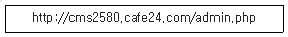
- 관리자 페이지 노출 취약점
- 파일 다운로드 취약점
- 파일 업로드 취약점
- 디렉터리 리스팅(Directory Listing) 취약점
(정답률: 55%)
44. 권장하는 함수에 속하는 것은?
- strcat()
- gets()
- sprintf()
- strncpy()
(정답률: 43%)
45. 보안담당자 A씨는 자바스크립트 코드를 분석하기 위해 파일을 열었더니 아래와 같은 내용을 확인할 수 있었다. 아래와 같은 기법의 명칭은? (문제 복원 오류로 그림이 없습니다. 정확한 그림 내용을 아시는분 께서는 오류신고 또는 게시판에 작성 부탁드립니다.)
- 암호화
- 난독화
- 복호화
- 정규화
(정답률: 45%)
46. 다음 지문에서 설명한 프로토콜을 올바르게 나열한 것은?
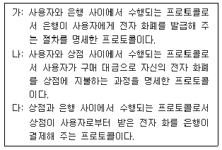
- 가:인출 프로토콜 나:지불 프로토콜 다:예치 프로토콜
- 가:인출 프로토콜 나:예치 프로토콜 다:지불 프로토콜
- 가:지불 프로토콜 나:인출 프로토콜 다:예치 프로토콜
- 가:예치 프로토콜 나:지불 프로토콜 다:인출 프로토콜
(정답률: 45%)
47. 다음의 지문이 설명하는 무선 랜 보안 표준은?
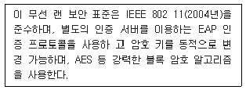
- WLAN
- WEP
- WPA
- WPA2
(정답률: 50%)
48. 다음 지문이 설명하고 있는 DRM의 구성요소는?
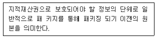
- 콘텐츠
- 워터마크
- DOI
- 컨트롤러
(정답률: 48%)
49. HTTP의 요청 메소드가 아닌 것은?
- GET
- POST
- PUSH
- PUT
(정답률: 47%)
50. 다음 중 디지털 핑거프린팅 기술에 대한 설명으로 옮지 않은 것은?
- 디지털 핑거프린팅 기술은 콘텐츠 내에 소유자 정보와 구매자 정보를 함께 포함하는 핑거프린트 정보를 삽입하여 후에 불법으로 배포된 콘텐츠로부터 배포자가 누구인지를 역추적 할 수 있도록 해 주는 기술이다.
- 핑거프린팅된 콘텐츠는 서로 다른 구매자 정보를 삽입하기 때문에 구매자에 따라 콘텐츠가 조금씩 다르다.
- 공모공격 (collusion attack)이란 여러 개의 콘텐츠를 서로 비교하여 워터마킹된 정보를 제거하거나 혹은 유추하여 다른 워터마크 정보를 삽입할 수 있는 것을 의미하는 데, 이처럼 워터마킹은 공모공격에 취약하지만 디지털 핑거프린팅 기술은 이 공격에 매우 안전하다.
- 디지털 핑거프린팅 기술은 워터마킹 기술과 같이 삽입과 추출기술로 분류하는데 삽입기술은 삽입하는 정보만 다를뿐 워터마킹 기술과 동일하다.
(정답률: 42%)
51. DNS Cache를 확인하는 윈도우 명령어는?
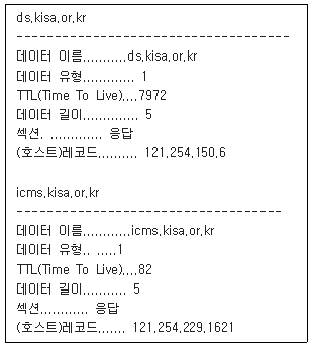
- ipconfig/dnsdisplay
- ipconfig/displaydns
- ipconfig/flushdns
- ipconig/dnsflush
(정답률: 48%)
52. 아래는 vsftp의 설정파일인 vsftpd.conf에 대한 설명이다. 올바른 내용을 모두 고르시오.
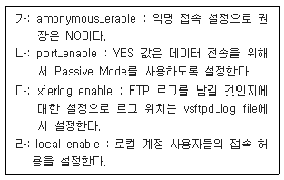
- 가, 나, 다
- 가, 다
- 가, 나, 다, 라
- 가, 다, 라
(정답률: 36%)
53. 다음에서 설명하는 정보보호 기술은?
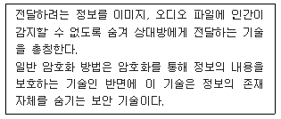
- 핑거프린트(Fingerprint)
- DOI(Digital Object Identifier)
- 디지털 워터마크(Digital watermark)
- 스테가노그래피(Steganography)
(정답률: 52%)
54. 다음 지문은 무엇을 설명한 것인가?
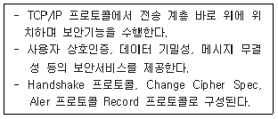
- IPSec
- PGP
- SSL/TLS
- SHTTP
(정답률: 58%)
55. 다음 지문이 설명하는 전자 거래 문서의 유형으로 알맞은 것은?
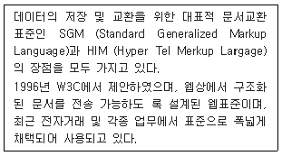
- SWIFT
- ebXML
- EDI(Electronic Data Interchange)
- XML(Extensible Markup Language)
(정답률: 40%)
56. 다음 보기가 설명하는 취약성은?
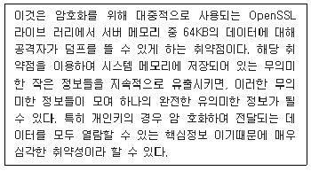
- Poodle
- Ghost
- Shellshock
- Heartbleed
(정답률: 46%)
57. 다음 표는 Apache 웹 서버의 주요 파일에 대한 접근권한을 나타낸다. 각각에 들어갈 내용으로 적절한 것은?
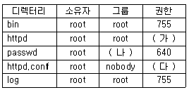
- 가:640 나:root 다:511
- 가:511 나:nobody 다:640
- 가:640 나:nobody 다:511
- 가:511 나:root 다:640
(정답률: 15%)
58. SSL/TLS에 대한 설명으로 옳은 것은?
- 상위계층 프로토콜의 메시지에 대해 기밀성과 부인방지를 제공한다.
- 종단 대 종단 간의 안전한 서비스를 제공하기 위해 UDP를 사용하도록 설계하였다.
- 레코드(Record) 프로토콜에서는 응용계층의 메시지에 대해 단편화, 압축, MAC 첨부, 암호화 등을 수행한다.
- 암호명세 변경(Change Cipher Spec) 프로토콜에서는 클라이언트와 서버가 사용할 알고리즘과 키를 협상한다.
(정답률: 20%)
59. 다음 중 PGP의 기능이 아닌 것은?
- 기밀성
- 전자서명
- 단편화와 재조립
- 송수신 부인방지
(정답률: 28%)
60. 다음 중 데이터베이스 보안 유형이 아닌 것은?
- 접근 제어(Access Control)
- 허가 규칙(Authorization Rule)
- 암호화(Encryption)
- 집합(Aggregation)
(정답률: 58%)
4과목: 정보 보안 일반
61. 국내 암호모듈 검증에 있어 검증대상 암호알고리즘으로 지정된 비밀키 블록암호 알고리즘으로 구성된 것은?
- 가:AES, 나:LEA 다:SEED
- 가:AES, 나:LEA 다:ARIA
- 가:ARIA, 나:LEA 다:SEED
- 가:ARIA, 나:AES 다:SEED
(정답률: 35%)
62. 사용자 인증에서는 3가지 유형의 인증방식을 사용하고 있으며, 보안을 강화하기 위하여 2가지 유형을 결합하여 2 factor 인증을 수행한다. 다음 중 2 factor 인증으로 적절하지 않은 것은?
- USB 토큰, 비밀번호
- 스마트카드, PIN(Personal Identification Number)
- 지문, 비밀번호
- 음성인식, 수기서명
(정답률: 48%)
63. 강제적 접근통제 정책에 대한 설명으로 옳지 않은 것은?
- 모든 주체와 객체에 보안관리자가 부여한 보안레이블이 부여되며 주체가 객체를 접근할 때 주체와 객체의 보안 레이블을 비교하여 접근허가 여부를 결정한다.
- 미리 정의된 보안규칙들에 의해 접근허가 여부가 판단되므로 임의적 접근통제 정책에 비해 객체에 대한 중앙 집중적인 접근통제가 가능하다.
- 강제적 접근통제 정책을 지원하는 대표적 접근통제 모델로는 BLP(Bell-Lapadula), Biba 등이 있다.
- 강제적 접근통제 정책에 구현하는 대표적 보안 메커니즘으로 Capability List와 ACL(Access Control List) 등이 있다
(정답률: 31%)
64. 다음 지문이 설명하고 있는 프로토콜은?
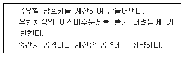
- Needham-Schroeder 프로토콜
- 공개키 암호
- KDC 기반 키 분배
- Diffie-Hellman 프로토콜
(정답률: 51%)
65. 아래 보기에서 설명하고 있는 공격기법은?
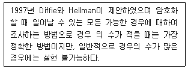
- 차분 공격(Differential Cryptanalysis)
- 선형 공격(Linear Cryptanalysis)
- 전수 공격(Exhaustive key search)
- 통계적 분석(Statistical analysis)
(정답률: 54%)
66. 소프트웨어로 구성되는 난수 생성기를 가장 적절하게 표현한 것은?
- SRNG
- HRNG
- PRNG
- RRNG
(정답률: 36%)
67. 아래 보기에서 설명하고 있는 공격기법은?
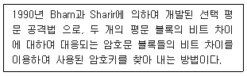
- 차분 공격(Differential Cryptanalysis)
- 선형 공격(Linear Cryptanalysis)
- 전수 공격(Exhaustive key search)
- 통계적 분석(Statistical analysis)
(정답률: 53%)
68. 다음의 장·단점을 가진 인증기술은?
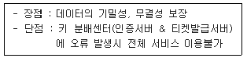
- 커버로스(Kerberos) 프로토콜
- OTP 인증
- ID/패스워드 인증
- 메시지 출처 인증
(정답률: 48%)
69. 키 관리는 키 생성, 분배, 설치, 갱신, 취소 폐기, 저장, 복구 등을 요구하는 포괄적인 개념이다. 한 사용자 또는 기관이 비밀키를 설정하여 다른 사용자에게 전달하는 기술을 키 분배라고 하며, 둘 또는 그 이상의 사용자가 공개된 통신 채널을 통하여 비밀키를 설정하는 것을 키 합의라고 한다. 다음 중 키 분배 방식에 해당되는 것은?
- Diffie-Hellman 방식
- Matsumoto-Takashima-lmai 방식
- Okamoto-Nakamura 방식
- Needham-Schroeder 방식
(정답률: 29%)
70. 다음 중 해시함수의 특징이 아닌 것은?
- 고정된 크기의 해시코드를 생성함
- 일방향성(one-wayness)
- 강 · 약 충돌 회피성이 보장됨
- 안전한 키를 사용할 경우 결과값의 안전성이 보장됨
(정답률: 40%)
71. 다음 중 암호시스템에 대한 수동적 공격은?
- 트래픽 분석
- 메시지 순서 변경
- 메시지 위조
- 삭제 공격
(정답률: 50%)
72. 다음 중 스트림 암호의 특징으로 알맞지 않은 것은?
- 원타임 패스워드를 실용적으로 구현할 목적으로 개발되었다.
- 짧은 주기와 높은 선형복잡도가 요구되며 주로 LFSR을 이용한다.
- 블록단위 암호화 대비 비트단위로 암호화하여 암호화 시간이 더 빠르다.
- 블록 암호의 CFB, OFB 모드는 스트림 암호와 비슷한 역할을 한다.
(정답률: 34%)
73. “한 단계 앞의 암호문 블록"을 대신할 비트열을 무엇이라 하는가?
- 패딩
- 초기화 벡터
- 스트림 블록
- 운영모드
(정답률: 45%)
74. 이중서명(Dual Signature)은 사용자가 구매정보와 지불정보를 각각 해시한 후 해시값을 합하여 다시해시 그리고 최종 해시값을 카드 사용자의 개인키로 암호화한 서명을 말하는 것으로 이중서명 절차이다. 이중서명을 사용하는 것으로 적합한 것은?
- SET
- PKI
- 전자화폐
- 전자수표
(정답률: 37%)
75. 다음 지문이 설명하는 것은?
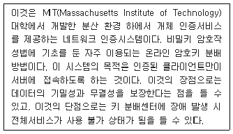
- Diffie-Hellman Protocol
- Kerberos Protocol
- Needham-schroeder Protocol
- SET Protocol
(정답률: 49%)
76. 다음 중 임의적 접근통제(DAC : Dscretionary access control) 에 해당하는 특징이 아닌 것은?
- 사용자 기반 및 ID 기반 접근통제
- 중앙 집중적 관리가 가능
- 모든 개개의 주체와 객체 단위로 접근권한 설정
- 객체의 소유주가 주체와 객체 간의 접근통제 관계를 정의
(정답률: 46%)
77. 다음 중 대칭 암호 알고리즘이 아닌 것은?
- BlowFish
- SEED
- Diffie-Hellman
- 3DES
(정답률: 40%)
78. 다음 중 인증서가 폐지되는 사유가 아닌 것은?
- 인증서 발행 조직에서 탈퇴
- 개인키의 손상
- 개인키의 유출 의심
- 인증서의 유효기간 만료
(정답률: 34%)
79. 다음 그림은 블록암호 운용모드의 한 종류를 나타낸 것이다. 다음 그림에 해당하는 블록암호 운용모드는?
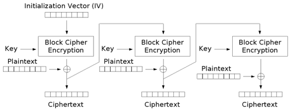
- CBC(Cipher Block Chaining)
- ECB(Electronic CodeBook)
- CTR(CounTeR)
- CFB(Cipher FeedBack)
(정답률: 27%)
80. n명의 사람이 대칭키 암호화 통신을 할 경우 몇 개의 대칭키가 필요한가?
- n(n+1)/2
- n(n-1)/2
- n(n-1)
- n(n+1)
(정답률: 53%)
5과목: 정보보안 관리 및 법규
81. 괄호에 공통적으로 들어갈 적정한 것은?
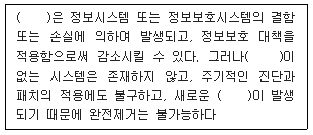
- 취약점
- 위협
- 위험
- 침해
(정답률: 53%)
82. 위험분석 방법론으로 적절히 짝지은 것은?
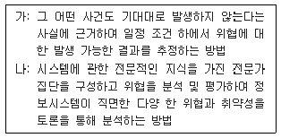
- 가: 확률분포법 나: 순위결정법
- 가: 시나리오법 나: 델파이법
- 가: 델파이법 나: 확률분포법
- 가: 순위결정법 나:시나리오법
(정답률: 53%)
83. 「개인정보보호법」에 의거하여 개인정보처리자는 개인정보의 처리에 대하여 정보주체의 동의를 받을 때에는 각각의 동의 사항을 구분하여 정보주체가 이를 명확하게 인지할 수 있도록 알리고 각각 동의를 받아야 한다. 동의를 서면으로 받을 때에는 중요한 내용을 정하는 방법에 따라 명확히 표시하여 알아보기 쉽게 하도록 되어 있다. 이때 중요한 내용에 해당되지 않는 것은?
- 동의를 거부할 권리가 있다는 사실 및 거부에 따른 불이익이이 있을 경우에는 불이익에 대한 내용
- 개인정보를 제공받는 자
- 개인정보를 제공받는 자의 개인정보 이용 목적
- 개인정보의 보유 및 이용 기간
(정답률: 38%)
84. 「개인정보보호법」에 의거하여 공공기관의 장은 대통령령으로 정하는 기준에 해당하는 개인정보 파일의 운용으로 인하여 정보주체의 개인정보 침해가 우려되는 경우에는 그 위험 요인의 분석과 개선사항 도출을 위한 영향평가를 하고 그 결과를 행정안전부장관에게 제출하여야 한다. 영향평가를 하는 경우에 고려해야 할 사항으로 적합하지 않은 것은?
- 처리하는 개인정보의 수
- 개인정보의 제3자의 제공 여부
- 정보주체의 권리를 해할 가능성 및 그 위험 정도
- 개인정보를 처리하는 수탁업체 관리·감독의 여부
(정답률: 34%)
85. "개인정보 보호법”에서 개인정보의 파기 및 보존 시 가장 적절하지 않은 경우는?
- 개인정보의 이용목적이 달성된 때에는 즉시 파기하여야 한다.
- 개인정보 삭제 시 만일의 경우에 대비하여 일정기간 보관한다.
- 개인정보를 파기하지 않고 보관할 시에는 다른 개인정보와 분리하여 저장 · 관리한다.
- 전자적 파일 형태인 경우, 복원이 불가능한 방법으로 영구 삭제한다.
(정답률: 54%)
86. 「개인정보보호법」에 의거하여 개인정보처리자가 정보주체 이외로부터 수집한 개인정보를 처리하는 때에는 정보주체의 요구가 있으면 즉시 정보주체에게 알려야 하는 사항들에 해당되지 않는 것은?
- 개인정보 처리의 정지를 요구할 권리가 있다는 사실
- 개인정보의 보유·이용 기간
- 개인정보의 수집 출처
- 개인정보의 처리 목적
(정답률: 9%)
87. 다음 지문이 설명하는 위험분석방법론은?
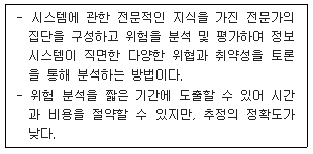
- 과거자료 분석법
- 확률 분포법
- 델파이법
- 시나리오법
(정답률: 52%)
88. 정보보호 사전점검에 대한 설명으로 옳은 것은?
- 정보보호 사전점검은 전자적 침해행위에 대비하기 위한 정보시스템의 취약점 분석 평가와 이에 기초한 보호대책의 제시 또는 정보보호 관리체계 구축 등을 주된 목적으로 한다.
- 방송통신위원회는 사업자가 사전점검을 실시하거나 실시 계약을 체결한 경우 해당 사업 또는 서비스에 대하여 가점을 부여하는 등 우대조치를 할 수 있다.
- 사전점검 수행기관으로 지정받으려는 자는 수행기관 지정 신청서를 방송통신위원회에 제출하여야 한다.
- 사전점검 대상 범위는 제공하려는 사업 또는 정보통신 서비스를 구성하는 하드웨어, 소프트웨어, 네트워크 등의 유무형 설비 및 시설을 대상으로 한다.
(정답률: 23%)
89. 도출된 위험이 해당 사업에 심각한 영향을 주는 관계로 보험에 가입하였다. 이런 식으로 위험을 경감 또는 완화시키는 처리 유형은 무엇인가?
- 위험 감소(reduction)
- 위험 전가(transfer)
- 위험 수용(acceptance)
- 위험 회피(avoidance)
(정답률: 36%)
90. 다음 중 공인인증기관이 발급하는 공인인증서에 포함되어야 하는 사항이 아닌 것은 무엇인가?
- 가입자의 전자서명검증정보
- 공인인증서 비밀번호
- 가입자와 공인인증기관이 이용하는 전자서명방식
- 공인인증기관의 명칭 등 공인인증기관을 확인할 수 있는 정보
(정답률: 44%)
91. 고유식별정보는 법령에 따라 개인을 고유하게 구별하기 위하여 부여된 식별정보로서 대통령령으로 정하는 정보이다. 다음 중 개인정보처리자가 고유식별정보를 처리할 수 있는 경우에 해당하는 것은?
- 정보주체의 동의를 받지 않은 경우
- 법령에서 구체적으로 고유식별정보의 처리를 요구하거나 허용하는 경우
- 교통단속을 위하여 필요한 경우
- 시설 안전 및 화재 예방을 위하여 필요한 경우
(정답률: 51%)
92. 다음 중 이래 지문의 빈칸 안에 들어가야 할 단어 또는 문장으로 가장 적합한 것은?
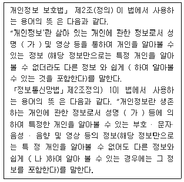
- 가:주민등록번호 나: 구분
- 가:성별 나: 유추
- 가:주민등록번호 나: 결합
- 가:성별 나: 구분
(정답률: 44%)
93. 개인정보영향평가 시 반드시 고려할 사항이 아닌 것은?
- 처리하는 개인정보의 수
- 개인정보 취급자의 인가 여부
- 개인정보의 제3자 제공 여부
- 정보주체의 권리를 해할 가능성 및 그 위협
(정답률: 25%)
94. 개인정보의 안정성 확보조치 기준(고시)의 제7조(개인정보의 암호화)에 따라 반드시 암호화하여 저장해야하는 개인정보가 아닌 것은?
- 비밀번호
- 고유식별번호
- 바이오 정보
- 전화번호
(정답률: 48%)
95. 다음은 정보통신기반 보호법에 따른 주요 정보통신기반시설의 지정요건이다. 빈칸 가 ~ 마 에 들어갈 알맞은 단어를 바르게 나열한 것은?
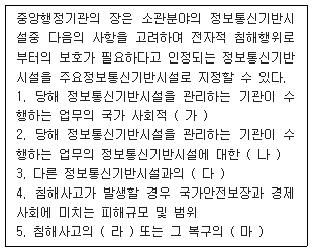
- 가:중요성 나:기밀성 다:의존도 라:발생가능성 마:용이성
- 가:기밀성 나:중요성 다:의존도 라:용이성 마:경제성
- 가:중요성 나:의존도 다:상호연계성 라:발생가능성 마:용이성
- 가:의존도 나:중요성 다:상호연계성 라:발생가능성 마:용이성
(정답률: 46%)
96. 「개인정보보호법」상에서 민감정보로 명시되어 있는 것은?
- 혈액형
- 사상·신념
- 결혼 여부
- 성별
(정답률: 47%)
97. 다음 정보보호 관리체계 인증제도에 대한 설명으로 가장 적절하지 않은 것은?
- 정보통신서비스와 직접적인 관련성이 낮은 전사적 자원관 리시스템(ERP), 분석용 데이터베이스(DW), 그룹웨어 등 기업 내부 시스템, 영업/마케팅 조직은 일반적으로 인증 범위에서 제외해도 된다.
- 인증범위는 신청기관이 제공하는 정보통신서비스를 기준으로 해당 서비스에 포함되거나 관련 있는 자산(시스템, 설비, 시설 등), 조직 등을 포함하여야 한다.
- ISMS 의무인증범위 내에 있는 서비스, 자산, 조직(인력)을 보호하기 위한 보안시스템은 포함 대상에서 제외해도 된다.
- 해당 서비스의 직접적인 운영 및 관리를 위한 백오피스 시스템은 인증범위에 포함되며, 해당 서비스와 관련이 없더라도 그 서비스의 핵심정보자산에 접근 가능하다면 포함하여야 한다.
(정답률: 33%)
98. 다음 지문이 설명하는 인증제도는?
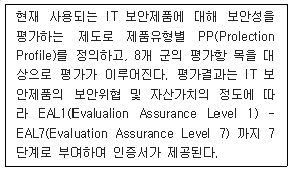
- ISO 27001
- ITSEC
- CC(Common Criteria)
- ISMS
(정답률: 42%)
99. 다음의 지문이 설명하는 정보보호 용어는?
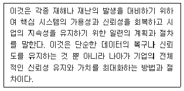
- 재난 예방 계획
- 업무연속성 계획
- 기업 안정성 확보 계획
- 시스템 운영 계획
(정답률: 39%)
100. 개인정보처리자는 다음 지문의 사항이 포함된 것을 정하고 이를 정보주체가 쉽게 확인할 수 있게 공개하도록 되어 있다. 다음 지문의 사항이 포함된 문서의 법률적 명칭은 무엇인가?
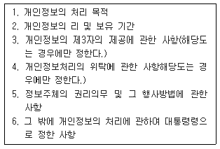
- 개인정보 보호정책
- 표준 개인정보 보호지침
- 개인정보 보호지침
- 개인정보 처리방침
(정답률: 45%)